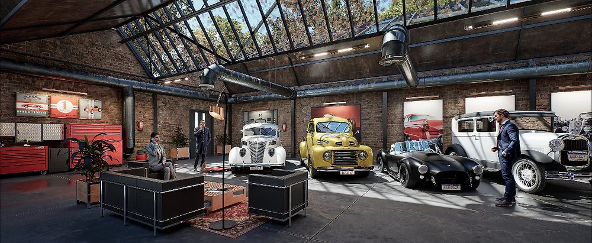

INNOVACIÓN & RENDERSDescubriendo el Futuro: Render Revolucionario con Twinmotion 2025.1.2 & Classic Car Warehouse
En el cambiante mundo de la visualización arquitectónica, surgen nuevas herramientas que transforman la forma en que los creadores dan vida a sus ideas. Analizamos las capacidades de Twinmotion 2025.1.2 junto al modelado de precisión en SketchUp 2024 para lograr un fotorrealismo sin precedentes.